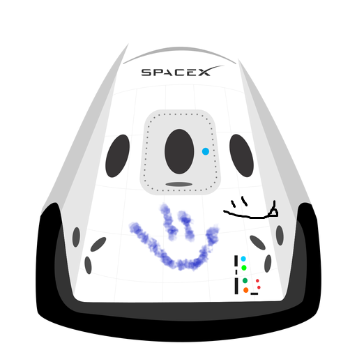

Hyperblog
Tu blog de confianza
Este es el título atractivo e interesante del post
Y éste es el párrafo de inicio donde vamos a explicar las cosas increíbles que se pueden hacer con las ramas.

Los blogs son la mejor forma de compartir información y tus ideas. Mucho más que ir a conferencias o salir en Youtube. Excepto si eres rockstars. Pero estadísticamente no lo eres... por ahora.
Suscríbete y dale like.
Lalito es mi amorcito